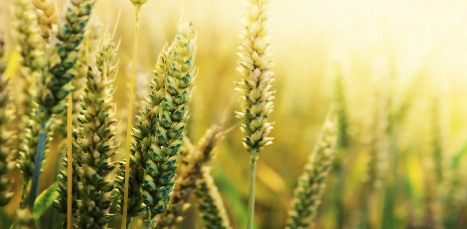
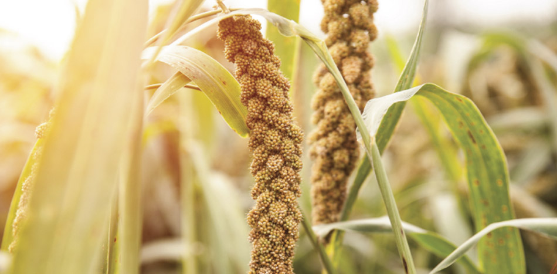
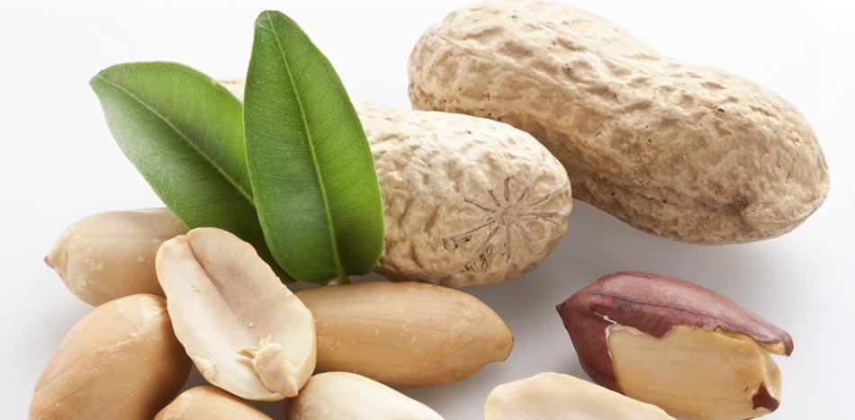
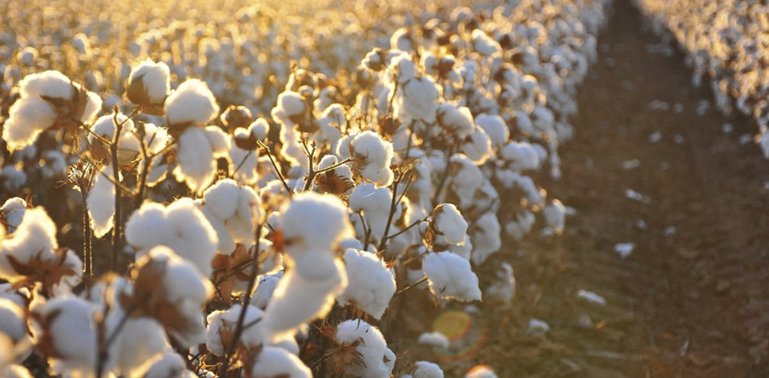
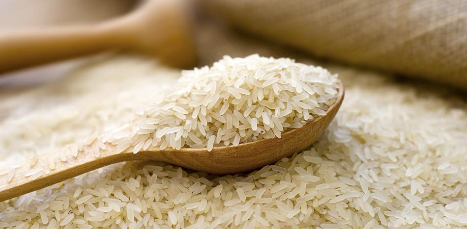

Wheat is a grass widely cultivated for its seed, a cereal grain which is a worldwide staple food. There are many species of wheat which together make up the genus Triticum; the most widely grown is common wheat. The archaeological record suggests that wheat was first cultivated in the regions of the Fertile Crescent around 9600 BCE. Botanically, the wheat kernel is a type of fruit called a caryopsis. Wheat is grown on more land area than any other food crop (220.4 million hectares, 2014). World trade in wheat is greater than for all other crops combined. In 2016, world production of wheat was 749 million tonnes, making it the second most-produced cereal after maize. Since 1960, world production of wheat and other grain crops has tripled and is expected to grow further through the middle of the 21st century. Global demand for wheat is increasing due to the unique viscoelastic and adhesive properties of gluten proteins, which facilitate the production of processed foods, whose consumption is increasing as a result of the worldwide industrialization process and the westernization of the diet. Wheat is an important source of carbohydrates. Globally, it is the leading source of vegetal protein in human food, having a protein content of about 13%, which is relatively high compared to other major cereals but relatively low in protein quality for supplying essential amino acids. When eaten as the whole grain, wheat is a source of multiple nutrients and dietary fiber. In a small part of the general population, gluten "the major part of wheat protein" can trigger coeliac disease, non-coeliac gluten sensitivity, gluten ataxia and dermatitis herpetiformis.
Sorghum

Sorghum is a genus of flowering plants in the grass family Poaceae. Seventeen of the twenty-five species are native to Australia, with the range of some extending to Africa, Asia, Mesoamerica, and certain islands in the Indian and Pacific Oceans. One species is grown for grain, while many others are used as fodder plants, either cultivated in warm climates worldwide or naturalized, in pasture lands. Sorghum is in the subfamily Panicoideae and the tribe Andropogoneae (the tribe of big bluestem and sugarcane).
Groundnut

The peanut, also known as the groundnut and the goober and taxonomically classified as Arachis hypogaea, is a legume crop grown mainly for its edible seeds. It is widely grown in the tropics and subtropics, being important to both small and large commercial producers. It is classified as both a grain legume and, because of its high oil content, an oil crop. World annual production of shelled peanuts was 42 million tonnes in 2014. Atypically among crop plants, peanut pods develop underground rather than aboveground. It is this characteristic that the botanist Linnaeus used to assign the specific name hypogaea, which means "under the earth." As a legume, the peanut belongs to the botanical family Fabaceae; this is also known as Leguminosae, and commonly known as the bean, or pea, family. Like most other legumes, peanuts harbor symbiotic nitrogen-fixing bacteria in root nodules. This capacity to fix nitrogen means peanuts require less nitrogen-containing fertilizer and improve soil fertility, making them valuable in crop rotations. Peanuts are similar in taste and nutritional profile to tree nuts such as walnuts and almonds, and as a culinary nut are often served in similar ways in Western cuisines. The botanical definition of a "nut" is a fruit whose ovary wall becomes very hard at maturity. Using this criterion, the peanut is not a true nut, but rather a legume. However, for culinary purposes and in common English language usage, peanuts are usually referred to as nuts.
Cotton

Cotton is a soft, fluffy staple fiber that grows in a boll, or protective case, around the seeds of the cotton plants of the genus Gossypium in the mallow family Malvaceae. The fiber is almost pure cellulose. Under natural conditions, the cotton bolls will increase the dispersal of the seeds. The plant is a shrub native to tropical and subtropical regions around the world, including the Americas, Africa, and India. The greatest diversity of wild cotton species is found in Mexico, followed by Australia and Africa. Cotton was independently domesticated in the Old and New Worlds. The fiber is most often spun into yarn or thread and used to make a soft, breathable textile. The use of cotton for fabric is known to date to prehistoric times; fragments of cotton fabric dated from 5000 BC have been excavated in Mexico and between 6000 BC and 5000 BC in the Indus Valley Civilization. Although cultivated since antiquity, it was the invention of the cotton gin that lowered the cost of production that led to its widespread use, and it is the most widely used natural fiber cloth in clothing today. Current estimates for world production are about 25 million tonnes or 110 million bales annually, accounting for 2.5% of the world's arable land. China is the world's largest producer of cotton, but most of this is used domestically. The United States has been the largest exporter for many years. In the United States, cotton is usually measured in bales, which measure approximately 0.48 cubic meters (17 cubic feet) and weigh 226.8 kilograms (500 pounds).
Rice
